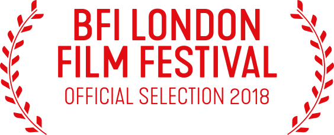
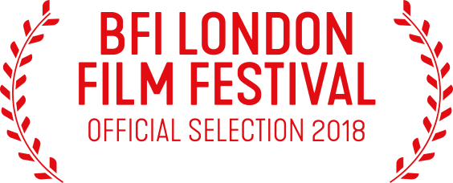

“A hard-hitting emotional portrayal of teenage angst and fragile burgeoning masculinity.”
Toronto International Film Festival
“Driven by a commanding performance from rising star Matej Zemljič, who imbues the conflicted Andrej with a palpable sense of silent longing.”
BFI London Film Festival
“If someone snuffs out a weakness, that could be the end of you. Consequences asks how, in world where this seems to be the only rule, there can be any room for love.”
The Hollywood Reporter
“The body-beautiful protagonists do have a certain animal charisma, and while loosely plotted, their doings are tightly paced and credibly ever on the edge of violence.”
Variety
“The body-beautiful protagonists do have a certain animal charisma, and while loosely plotted, their doings are tightly paced and credibly ever on the edge of violence.”
Gay Essential
“Stante hits us with a combination of fists as he destroys the happiness he systematically created for Andrej in a swiftly brutal five-minute assault possessing as much emotional resonance as violent carnage.”
The Film Stage
“The body-beautiful protagonists do have a certain animal charisma, and while loosely plotted, their doings are tightly paced and credibly ever on the edge of violence.”
Gay Essential
“From the writing, direction, acting, and production design, I’m thunderstruck by the simultaneous simplicity and complexity of Consequences and its layers.”
Black Girl Nerds
“There’s no flash or pizzazz here, just a moving story of lost youth trying to find a place to call its own and how wrong that can go.”
The Weekly Spoon
STARRING MATEJ ZEMLJIČ, TIMON ŠTURBEJ, GAŠPER MARKUN
WRITTEN AND DIRECTED BY DARKO ŠTANTE PRODUCERS JERCA JERIČ, ANDRAŽ JERIČ CO-PRODUCERS ROK BIČEK, TEO RIŽNAR, JULIJ ZORNIK
DIRECTOR OF PHOTOGRAPHY ROK KAJZER NAGODE EDITOR SARA GJERGEK SOUND DESIGNER JULIJ ZORNIK
PRODUCTION DESIGNER ŠPELA KROPUŠEK COSTUME DESIGNER INA FERLAN MAKE-UP DESIGNER ANITA FERČAK
MUSIC SUPERVISOR VLADIMIR “DOŠA” KOSOVIĆ
ALSO STARRING LOVRO ZAFTED, ROSANA HRIBAR, DEJAN SPASIĆ, BLAŽ SETNIKAR, IZTOK DRABIK JUG, LEA COK
TEMPORAMA IN CO-PRODUCTION WITH ZWINGER FILM / NUFRAME / 100